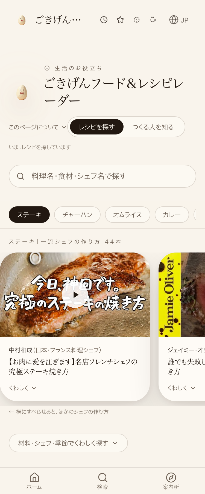
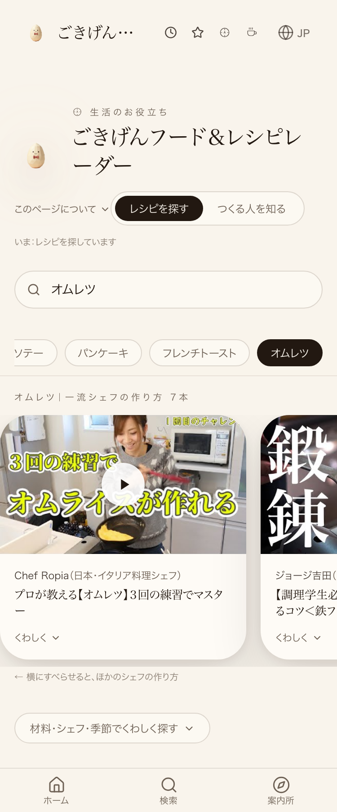

wcnXjOalkPA(ラタトゥイユ)だけがok:true=実在・実再生確認済みのため、これをfood-nakamura-ratatouilleとして追加しmainへpush済み。『レシピを探す』ボタン無反応の指摘は、選択済みタブの仕様通りの正常挙動が検品ツール側で誤検知されていたもの(姉妹案件#35108で既に修正済み・commit 0ea42f5855)で、実機のクリック検品でも30/30件が反応した。


| 確認項目 | 結果 |
|---|---|
| 中村和成『ラタトゥイユ』追加 | main合流済み(commit 6e267d0ba) |
| レシピを探すタブ押下 | 選択済みタブの仕様通り(正常) |
| Lovable公開(Publish) | 未反映。CDP9223のChromeが未起動、本セッションのChrome起動は関所1186号で禁止のため押せていない |